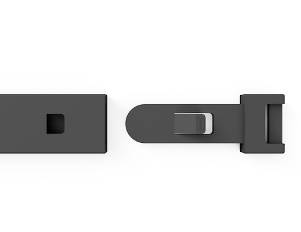

Bache Innovative is a company that creates textiles for clothes, construction, and for the automotive industrie.
They have many machines for knitting, but also weaving.The machines differ in the needles. Some have more, some less. Usually the machines have two needle beds, but one has even four needle beds, which allowes to knitt much tighter.
The patterns, thickness, tightness depends on the garns and the different needles, of course. Pullovers knitted with the same garn may look totally different when ready because of being produced in different machines. There are endless possibilities to knitting.
The average time to finish a big pullover is about 60-70 minutes.
Clients can choose from many different garns.
They produce clothes for high end brand such as Annette Goertz, but also do clothing for medical purposes.
.jpg)
Knitting machine
.jpg)
.jpg)
Can be used for example for bandages
.jpg)
.jpg)
Needle beds
.jpg)
Same garn, different look
.jpg)
Old knitting machine
.jpg)
Pipe that needs to be fixed
.jpg)
Put glasfiber on the inside of broken pipe to repair it
.jpg)
.jpg)
CLothing for medial purposes
Joint 1
The joint consists of two separate bodies. They were rectangular at first, but then transformed to 3D bodies. Parts of the first body were cut out or formed differently and then applied to the second body in the negative way to achieve a "click-in" joint.
The corners and edges were rounded just for the look.
In the following you can see the process.


And the rendered results can be viewed at the top.
Joint 2


This joint was created by building two separate rectangular bodies and extruding them. With lines the part that was supposed to be subtracted was outlined in body 1. Later the cut part was filled by adding the negative form to body 2.